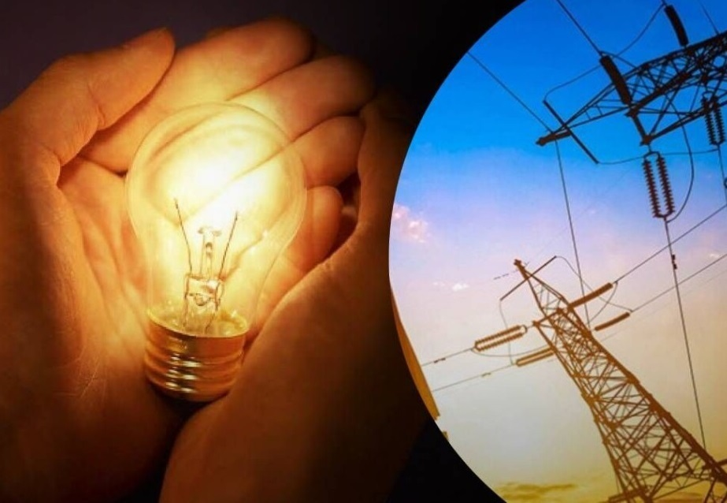

14 вересня на Київщині без відключень електроенергії

За інформацією Укренерго, у суботу, 14 вересня, обмежень в електропостачанні на
Київщині не прогнозується
Про це повідомляє інформаційний портал "Моя Київщина" із покликанням на Укренерго.
Завтра на Київщині та в Україні в цілому не відключатимуть електроенергію.
Памʼятайте про важливість розумного споживання – користуйтеся електроприладами
ощадливо! Не користуйтесь потужними електроприладами у періоди пікового споживання:
6:00 – 10:00 і 16:00 – 22:00.
Нагадаємо, що
Бельгія бере під патронат Київську та Чернігівську області та планує направити 150
млн євро на відновлення соціальної та енергетичної інфраструктури.